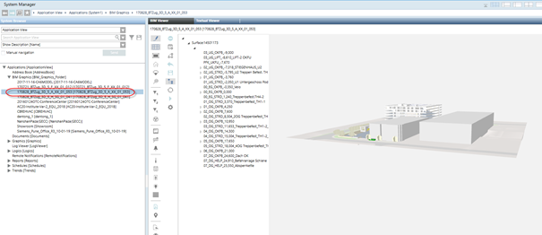
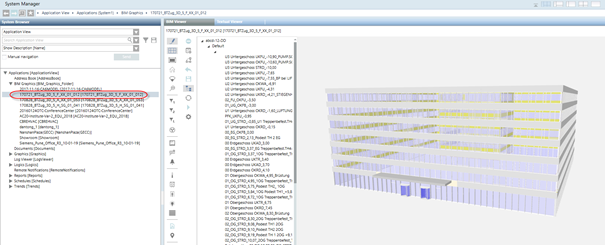
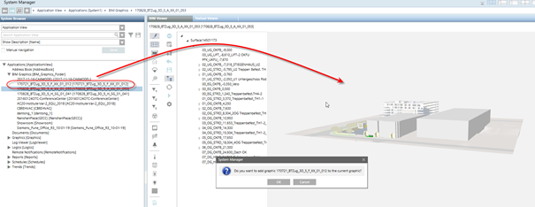
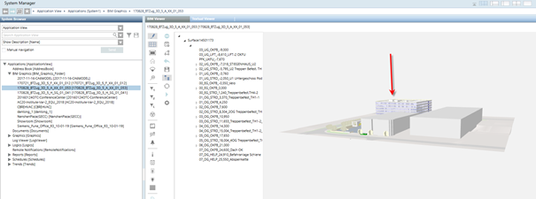

Combine Multiple BIM Models
Multiple BIM models can be combined. This is useful when you have multiple IFC models for a BIM project, for example, one for the architecture model and one for each discipline (building automation and control equipment, safety equipment, etc.).

The coordinate systems of the different IFC models must be synchronized. Combined models cannot be moved.
Basic workflow (see detailed description of the BIM Viewer):
- Created a separate Desigo CC BIM graphic for each IFC model and save it as a normal Desigo CC BIM graphic.
- Open the BIM basic graphic in BIM Viewer (this is normally the architecture mode) and drag the graphics to be combined (normally models with equipment) from the Application View to the BIM Viewer window.
Example for the Combination Process
BIM model as basic graphic

Additional BIM models as BIM graphics (here the window)

Drag the graphic to the basic graphic

Result

The information on the combined graphics is also saved when saving the BIM basic graphic. The additional graphics are automatically loaded when reopening the BIM basic graphic.
- The complete combined graphic is displayed when selecting the BIM basic graphic in in System Browser. If you select another (partial) graphic, only that graphic is displayed.
- Recursive combinations are is not supported, for example, if the additional BIM graphic includes combined graphics, the result is not as intended.